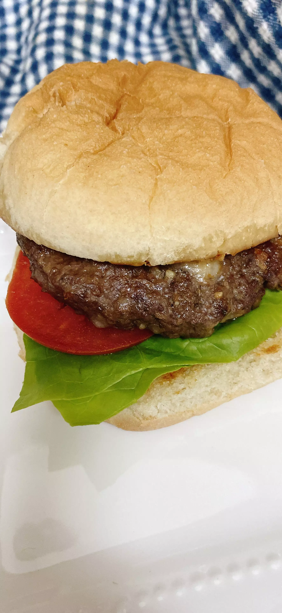

Creating a HamBurger!

Description:
This is a small-scale hamburger recipe, perfect for two people. Serve on toasted hamburger rolls with lettuce, tomato, ranch dressing, and other preferred toppings.
- Prep: 5mins
- Cook: 10mins
- Total: 15mins
- Servings: 2
- Yeild: 2 patties
Ingredients
- 1/2 pound ground beef
- 1 Ounce grated white Chedder cheese
- 1 tablespoonFrench-fried onions
- 1 teaspoon dry ranch dressing mix
- 1/2 teaspoon sazon seasoning (such as Goya)
- salt and ground black pepper to taste
Steps:
- Preheat an air fryer to 370 degrees F (188 degrees C).
- Mix ground beef, Cheddar cheese, French-fried onions, ranch mix, sazon seasoning, salt, and pepper together in a medium bowl. Shape into two equal hamburger patties.
- Air fry until internal thermometer is at least 160 degrees F (70 degrees C), about 6 minutes.